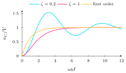

; RC/RL circuits are first order (
; RC/RL circuits are first order ( , or ), RLC circuits second order with
, or ), RLC circuits second order with  and damping
and damping  (series).
(series).Theorem
Write . Linearity lets the response be the same integral of responses to impulses; time invariance makes the response to equal to . Hence . Causal: for . BIBO stable iff . Exponentials are eigenfunctions: , .
First-order circuits
RC driven by : . Step of amplitude  : . General rule: — find initial value, final value and (or ). 10–90% rise time ; time to 50% — the factors of gate delay.
: . General rule: — find initial value, final value and (or ). 10–90% rise time ; time to 50% — the factors of gate delay.
Second-order circuits
Series RLC: . Roots : overdamped (), critically damped (, fastest without overshoot), underdamped (, oscillation at , overshoot ). .
Picture

Worked example
Ω,  µH,
µH,  nF: rad/s (5 MHz), : slightly underdamped, overshoot . Halving
nF: rad/s (5 MHz), : slightly underdamped, overshoot . Halving  gives , overshoot 25% — ringing on a PCB power rail.
gives , overshoot 25% — ringing on a PCB power rail.
Engineering applications
Timing circuits, debouncing, power-supply decoupling and resonance, interconnect delay (Elmore), control systems (second-order step specs), signal filtering by convolution (FIR filters in DSP).
Pitfall
Capacitor voltage and inductor current are continuous across a switching instant (finite energy); their derivatives are not. Initial conditions must use and  .
.